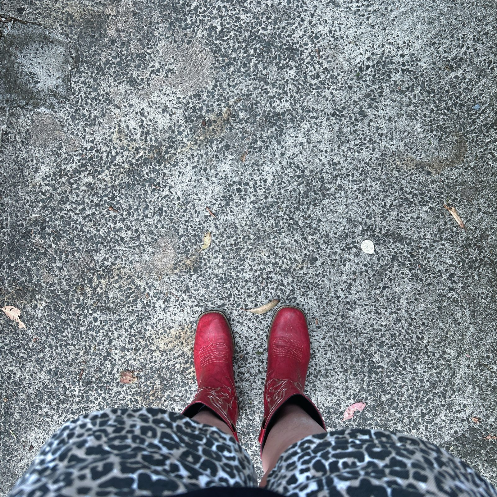
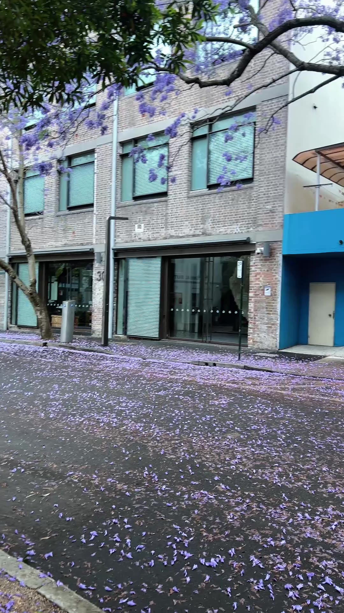

Streets
Welcome to Tech Style Bytes
Sydney cafes, bars, art, streets, fashion and tech, reviewed by a Microsoft MVP who refuses to dress like one.
I’ve spent more than 25 years in SharePoint and Microsoft 365. I’m a Microsoft MVP, and I spend my days making messy tech make sense.
But that’s only half of me. The other half is painting, fashion, designing t-shirts, and finding the best coffee, negroni and laneway in Sydney.
Tech Style Bytes is where that half lives.
Tech doesn’t have to be grey.
What you’ll find here
- Eat & Drink: cafes, brunch and dinners, with honest verdicts
- Bars: where to go after you log off
- Art: galleries, studios and my own paintings
- Streets: Sydney walks, laneways and jacaranda season
- Fashion: what I wear to work, and what I’d actually buy
- Tech: the gadgets and AI tools I really use, styled properly
Every review is honest. If something is ever gifted or sponsored, it will say so.
Follow along on Instagram at @techstylebytes.

